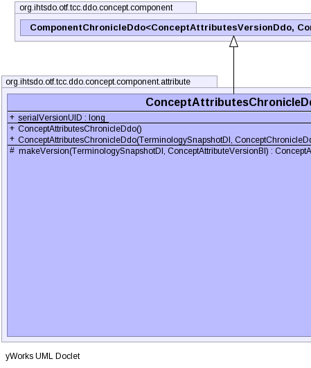
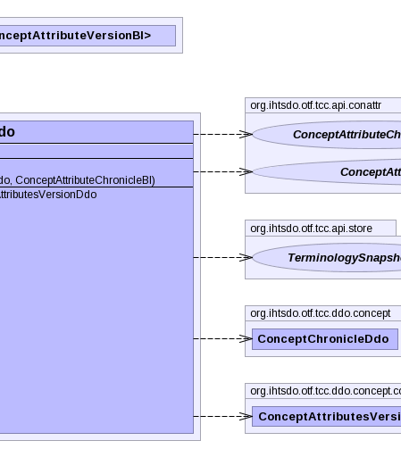

public class ConceptAttributesChronicleDdo extends ComponentChronicleDdo<ConceptAttributesVersionDdo,ConceptAttributeVersionBI>
|  |  |
| Modifier and Type | Field and Description |
|---|---|
static long |
serialVersionUID |
additionalIds, concept, refexes| Constructor and Description |
|---|
ConceptAttributesChronicleDdo() |
ConceptAttributesChronicleDdo(TerminologySnapshotDI ss,
ConceptChronicleDdo concept,
ConceptAttributeChronicleBI another) |
| Modifier and Type | Method and Description |
|---|---|
protected ConceptAttributesVersionDdo |
makeVersion(TerminologySnapshotDI ss,
ConceptAttributeVersionBI version) |
beforeUnmarshal, equals, getAdditionalIds, getComponentNid, getConcept, getIdCount, getPrimordialComponentUuid, getRefexes, getUuids, getVersionCount, getVersions, hashCode, setAdditionalIds, setComponentNid, setPrimordialComponentUuid, setRefexes, setVersions, toStringpublic static final long serialVersionUID
public ConceptAttributesChronicleDdo()
public ConceptAttributesChronicleDdo(TerminologySnapshotDI ss, ConceptChronicleDdo concept, ConceptAttributeChronicleBI another) throws IOException, ContradictionException
IOExceptionContradictionExceptionprotected ConceptAttributesVersionDdo makeVersion(TerminologySnapshotDI ss, ConceptAttributeVersionBI version) throws IOException, ContradictionException
makeVersion in class ComponentChronicleDdo<ConceptAttributesVersionDdo,ConceptAttributeVersionBI>IOExceptionContradictionExceptionCopyright © 2013 International Health Terminology Standards Development Organisation. All rights reserved.